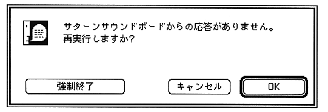

If the sound board hangs up at this time, it stops while the SCSI bus is occupied, so the Macintosh also stops working. As a result, the window opens while trying to display the "No response" dialog, but the resource cannot be loaded because the SCSI bus is occupied, and the window stops without displaying the contents. Become.
In such a case, wait for the SCSI bus to be released once by doing one of the following, and then try again.